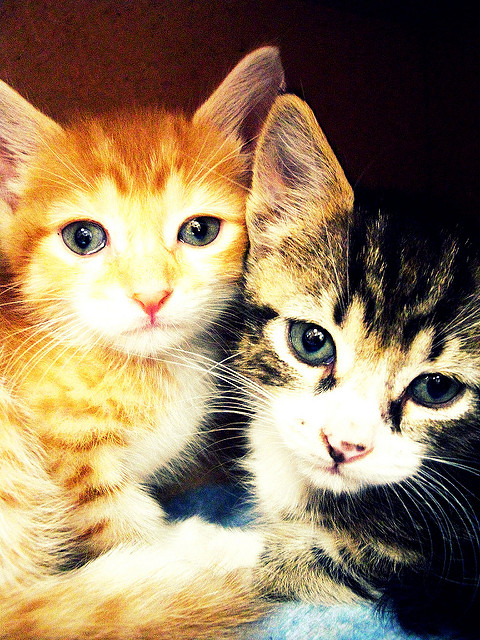
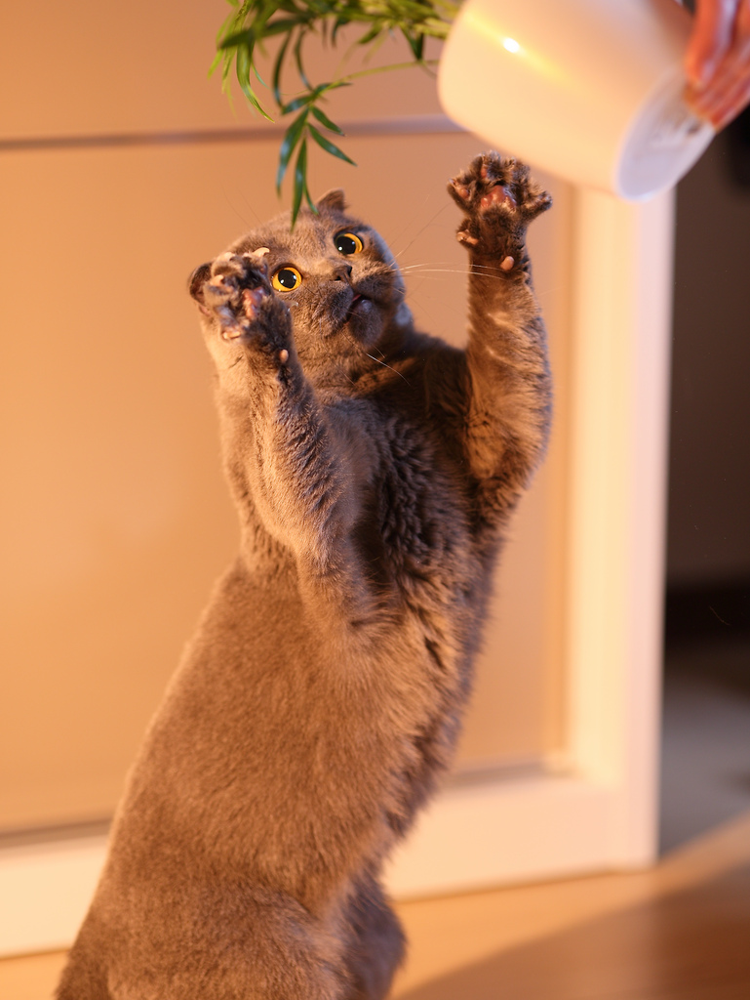
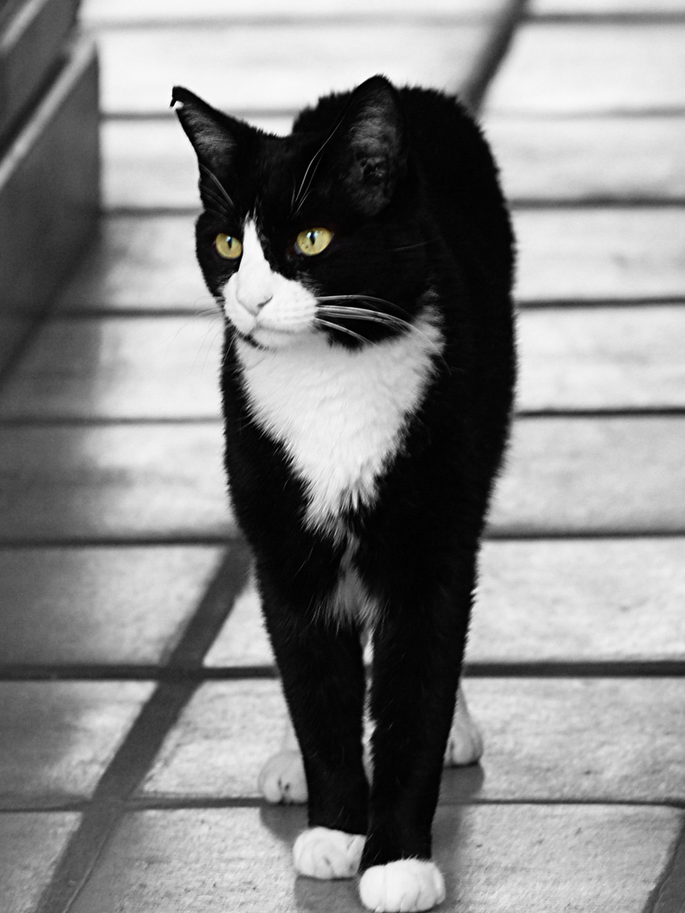

LATEST POSTS 9 Secrets to Keeping Your Indoor Cat Happy How to Enrich Your Indoor Cat's Life... Posted by Magda on February 7, 2017 5 Ways to Freshen Up Your Pet's Dental Health Are your pet’s pearly whites more yellow-brown in color? Does his breath make you plug your nose? We wouldn’t be surprised if many of you answered yes and yes. By the time they're 3 years old, most… Posted by Magda on February 5, 2017 5 Ways to Freshen Up Your Pet's Dental Health Are your pet’s pearly whites more yellow-brown in color? Does his breath make you plug your nose? We wouldn’t be surprised if many of you answered yes and yes. By the time they're 3 years old, most... Posted by Magda on January 22, 2017 10 Long-Haired Cat Breeds We Love Styles come and go, but as far as we're concerned, a long-haired cat will always be en vogue. If it's a style that suits your fancy — and you're prepared for the grooming needs that are required —… Posted by Magda on January 17, 2017 5 Reasons an Abyssinian Might Be the Right Cat Breed for You The Abyssinian is thought to be one of the oldest cat breeds. Although he has the look of a wild cat, he is domestic through and through and tends to be happy and playful. Learn more about this… Posted by Magda on January 3, 2017 7 Things to Know About Polydactyl Cats Most cats have a total of 18 toes — five on each of their front feet and four on each of the back. But some felines are born with extra toes. Those kitties are polydactyl, a Greek term meaning many… Posted by Magda on December 20, 2016 OLDER POSTS → NEW KITTEN  ADULT CAT  SENIOR CAT 